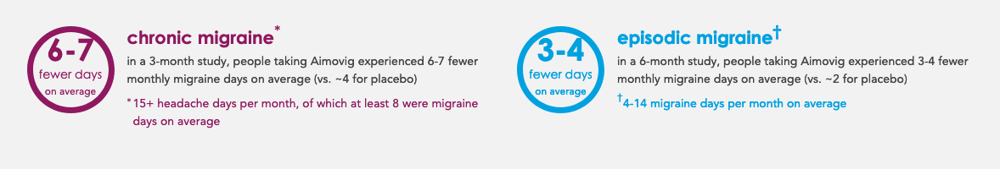

Limitations of Experiments (and Average Treatment Effects)¶
We’ve now discussed at length all the magical things we get from randomized experiments. But let’s take a moment to also discuss some of the limitations – both practical and conceptual – of experiments and the “average treatment effect” (ATE) framework.
Who’s Average?¶
Of all the potential problems with ATE, perhaps the biggest is that it’s just an average.
If everyone in our data has the same response to treatment (in the lingo, if we have “homogeneous treatment effects”), then this isn’t a problem – estimating the average treatment amounts to estimating every individual’s individual treatment effect.
In the real world, however, there are almost always heterogeneous (varying) treatment effects across groups and individuals.
Consider the following example: In 2018, the FDA approved a new drug for treating chronic migraines (Aimovig) that is being hailed by some as a “game changer” in migraine treatment. As is required for drug approval in the US, the pharmaceutical companies developing Aimovig had to undergo clinical trials in which a random sample of people with chronic migraines were given Aimovig (treatment), and a random sample was not (control). They then calculated an “Average Treatment Effect,” which the FDA then used to determine whether to release the drug. If you see an ad for Aimovig, you’ll probably see this ATE reported as follows:
Cool! Setting aside the fact the companies selling Aimovig are pushing the reduction in migraines count from before the trial to after (and hiding the actual difference between control and treatment in the fine print – any medical intervention tends to reduces symptoms, so you really do have to compare outcomes between treatment and control groups), the ATE of the drug appears to be about 2-3 fewer days of migraine a month (reduction of 6-7 in treatment minus 4 in control) for people who have 15+ headaches and >8 migraines a month.
That’s good – chronic migraines can be a crippling disability, and any improvements are exciting – but you’d be excused for asking why people are so excited about what seems like a relatively small reduction.
The answer is that the treatment effect of Aimovig is extremely heterogeneous. Most people who take Aimovig see little to no benefit, but some (depending on your criteria, something like 40%) see their migraine frequency fall by 50% or more.
And herein lies the problem of ATE: it doesn’t tell us about the distribution of effects.
To help understand heterogeneous effects, it is common in analyzing experiments to look for differences in outcomes among sub-populations. For example, we might split our sample into men and women, and see if the treatment effect among men is different from the treatment effect among women.
This can be especially important in interventions that may have disproportionate impacts on certain sub-populations. A sales tax, for example, may have a low average effect on the amount of money households have to spend on their children’s education, but among low-income households, that effect may be very large.
Here again, we see the role of researcher values in data science – if you just present someone with an average treatment effect, they will generally interpret it as “the” treatment effect, so it’s up to you to ensure that decision makers are aware of not just the average effect of an action, but also the distribution of consequences.
(On a technical note: splitting your sample also reduces the sample size in each bucket, so it reduces your statistical power. That means it isn’t always feasible – usually you can only do it for proportionately large groups in your data (men and women), but not small groups (say, Latino households with two children making less than $30,000 a year.)
The Fine Print of ATE¶
In addition to these conceptual issues, there are also a handful of technical issues to be aware of when calculating treatment effects.
SUTVA¶
Implicit in our discussion of the potential outcomes framework and definition of ATE is the idea that when we assign one unit to treatment or control, it has no impact on the outcomes of other units.
The reason we care about this is that we want our control group to have the same outcomes in a world without anyone being treated. But if the treatments we provide have indirect effects on our controls, this is violated, and we aren’t really comparing our treatment group to true controls.
It is often the case that experiments easily satisfy SUTVA. For example, consider a medical trial where we give people in the treatment group a new cholesterol medicine, and give a control group the standard cholesterol medicine. The fact I’m giving people in the treatment group a new cholesterol medicine doesn’t have any effect on the cholesterol of people in the control group. In other words, there are no “spillovers” to my treatment assignment – the people in the control group really are living the same life they would if no trial were taking place.
By contrast, consider a medical trial of vaccines. If the vaccine works, then the assignment of some people to treatment increases immunity in a community, making it less likely the people in our control group get sick. In the extreme, if we randomly gave our vaccine to 99% of people, the odds the disease we’re vaccinating against would ever reach our 1% control sample is almost zero.
When this happens, our experiment is said to violate the SUTVA assumption because we aren’t really comparing treated individuals to control individuals, we’re actually comparing treated individuals to kinda/indirectly treated individuals.
A few notes for those who like math:
SUTVA is embodied by the use of additively separable outcomes in our potential outcomes derivations.
SUTVA stands for “stable unit treatment value assumption”, meaning that a unit assigned to control stays assigned to control. If we have spillovers from treatment into control, then our control units are kinda being treated, so their “treatment value” is no longer stable.
Where does this actually come up?
In industry, you have to think about SUTVA on any platform with lots of interactions between users. If you run an A/B test on the matches people see in a dating app, their change in behavior will also change the behavior of users in your control group. Similarly, changing a Facebook users’ Newsfeed will change what they share, resulting in changes to the experience of other users (potentially including your “control” users).
There are ways around this – for Facebook experiments, you can experiment only on individuals who are very far apart from one another socially in the hope that changes in users’ behavior won’t reach one another. But even this is problematic – if you’re testing a new feature, giving it to one person may not accurately reflect what would happen if you gave it to one person and all their friends. In those cases, you can “block randomize”, randomly assigning big groups to control or treatment instead of individuals, while also trying to make sure treatment and control groups are far from one another.
So remember: ATE is best defined when you have a clear units of analysis that is relatively isolated from other units. If people are interacting, you want to think about more advanced randomization strategies.
Units, Not People
It’s also important to remember that SUTVA is not explicitly about people; it’s about units of analysis. That means if you can find groups that are fully isolated, you can treat each group as a unit of observation. For example, it is common in development economics to assign rural villages as a whole to either treatment or control, since we think that if we assigned some individuals within a village to treatment and some to control, those people would likely interact in ways that violate SUTVA. But since rural villages in developing countries are relatively isolated from one another, we think that the treatment assignment of each village should be independent of outcomes for other villages.